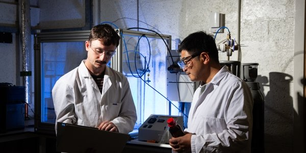
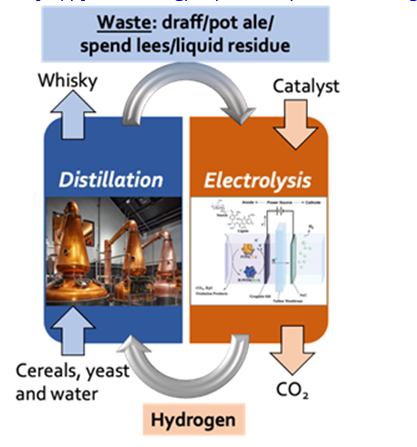
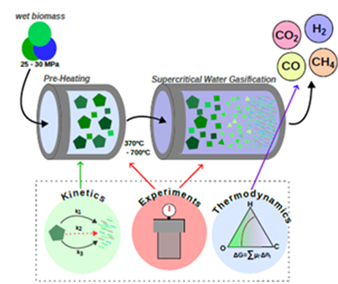
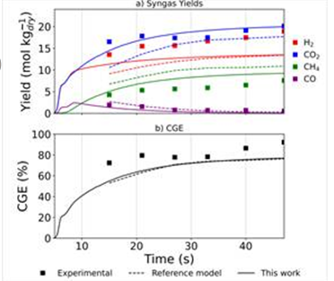
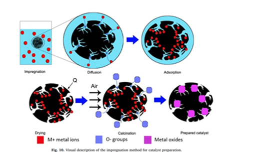
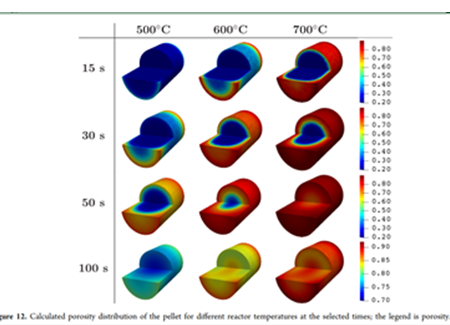

Hydrogen
Biomass and waste conversion.
Biomass and waste conversion.
Hydrothermal, thermochemical and electrochemical processes.
Multiphase reactive-flow CFD and plant-wide process modelling.
Techno-economic and environmental analysis.

Experimental and computational studies supporting low-carbon energy, fuel production and biomass valorisation.
Supergen Bioenergy Hub project · Watch the project video on YouTube
We develop mediated biomass electrolysis to convert wet biowaste into hydrogen. Thermal digestion with a polyoxometalate mediator is followed by electrolysis in a proton exchange membrane flow cell. Our work includes an Innovate UK KTP project with Isle of Raasay Distillery and a Supergen Bioenergy Hub project.

We investigate how wet biomass converts to synthesis gas under supercritical water conditions. Kinetic modelling is compared with published experiments to evaluate gas yields and cold gas efficiency, with improved predictions for carbon dioxide and methane.


Char- and ash-based catalysts are prepared for tar reforming. Studies examine activated char and nickel- or iron-modified materials to improve tar conversion, hydrogen production and pollutant removal.

One- and three-dimensional models of wheat straw pellets are validated against temperature and mass-loss measurements. The work connects internal heat transfer and evolving porosity with decomposition and char formation.
